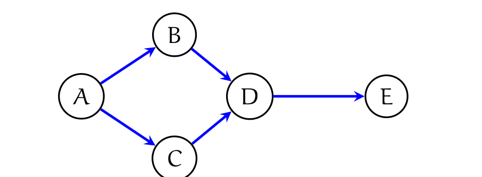
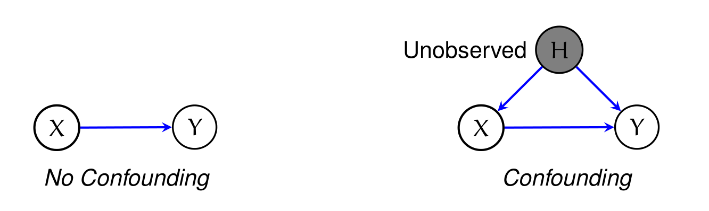
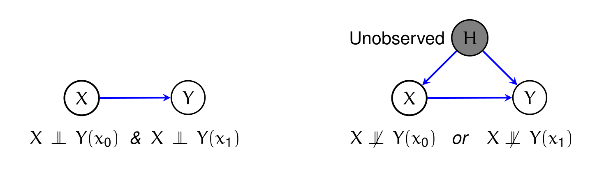
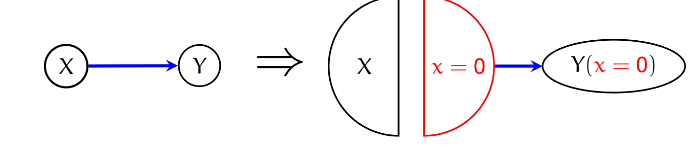
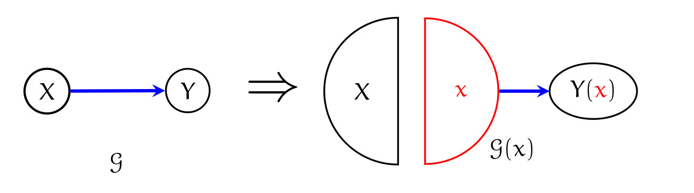
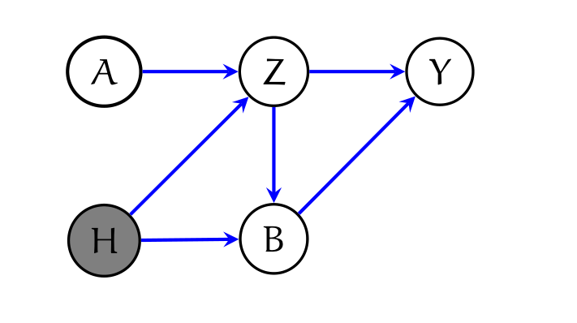
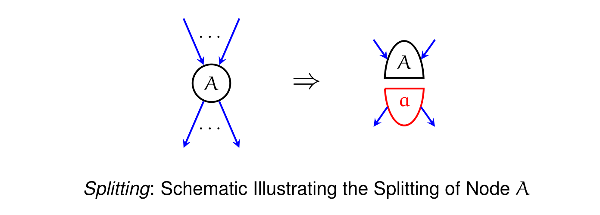
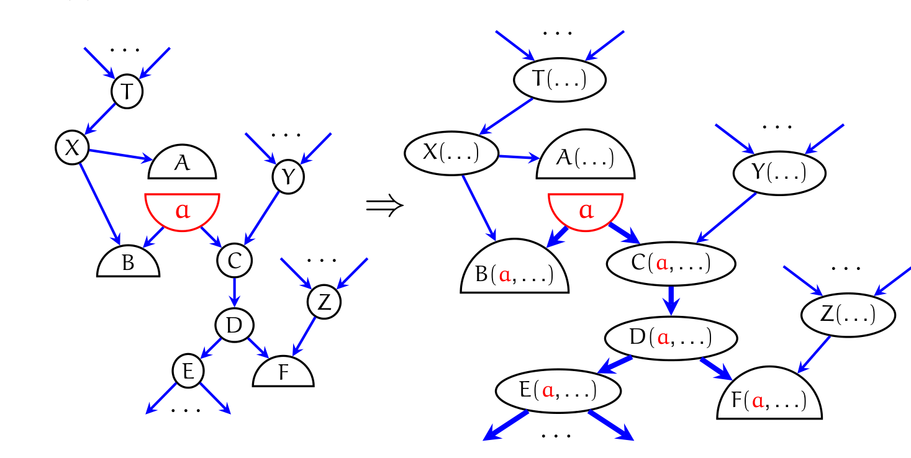
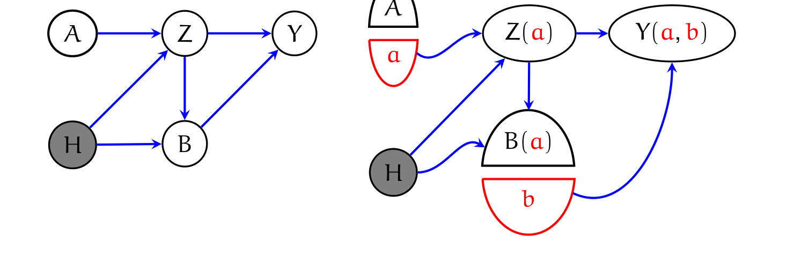
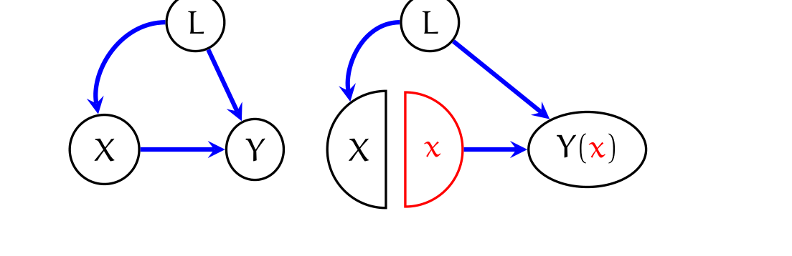

본 포스트는 서울대학교 GSDS Sanghack Lee 교수님의 Causal Inference 강의 자료(Single World Intervention Graphs (SWIGs))를 바탕으로, 강의를 처음 듣는 독자도 논리적 흐름을 따라갈 수 있도록 재구성한 것입니다. 원본 슬라이드는 워싱턴 대학교 통계학과 Thomas S. Richardson 교수가 하버드 보건대학원 James M. Robins와의 공동 연구를 바탕으로 2014년 5월 19일 스탠퍼드 Data, Society and Inference Seminar에서 발표한 강연 자료이며, 부제는 Unifying the Counterfactual and Graphical Approaches to Causality입니다. 이론의 완전한 서술은 Richardson & Robins, Single World Intervention Graphs, CSSS Technical Report No. 128 (2013)에 있습니다.
한 줄 요약 (TL;DR)
“반사실 변수를 그래프에 등장시키지 못한 것이 문제였다면, 처치 노드를 둘로 쪼개서 등장시키면 된다.”
잠재적 결과 프레임워크와 인과 다이어그램 프레임워크는 같은 대상을 다루면서도 오랫동안 따로 놀았습니다. 결정적인 이유는 단순합니다 — \(X \to Y\)라는 그래프 어디에도 \(Y(x_0)\)나 \(Y(x_1)\)이라는 변수 자체가 존재하지 않기 때문입니다. SWIG는 처치 노드 \(X\)를 관측되는 무작위 절반 \(X\)와 개입값이 박힌 고정 절반 \(x\)로 분할(node splitting)하고, 고정 노드의 후손들을 \(Y(x)\)로 재라벨링하는 두 단계만으로 반사실 변수를 그래프 위에 직접 올려놓습니다. 그 결과 \(X \perp\!\!\!\perp Y(x)\) 같은 잠재적 결과 프레임워크의 가정이 d-분리로 그대로 읽히고, 인수분해와 모듈성만으로 do-계산법의 모든 식별 결과가 따라 나옵니다. 앞선 회차(11강)가 잠재적 결과 프레임워크를 반사실 확률변수의 언어로 서술했다면, 이번 회차는 그 언어와 그래프 언어를 잇는 다리 자체를 만듭니다. 핵심 제약은 이름에 이미 들어 있습니다: 한 그래프에는 단 하나의 세계(single world), 즉 하나의 개입값만 등장합니다.
이진 처치에서의 잠재적 결과 (Potential Outcomes with Binary Treatment)
이진 처치 \(X\)와 반응 \(Y\)에 대해, 두 개의 잠재적 결과(potential outcome) 변수를 정의합니다.
- \(Y(x=0)\): 어떤 단위에게 \(X = 0\)이 할당되었더라면 관측되었을 \(Y\)의 값
- \(Y(x=1)\): 어떤 단위에게 \(X = 1\)이 할당되었더라면 관측되었을 \(Y\)의 값
표기의 편의를 위해 이들을 \(Y(x_0)\), \(Y(x_1)\)로도 쓰겠습니다. 원 슬라이드는 첨자와 등식 표기를 자유롭게 오가므로, 본 포스트도 문맥에 따라 두 표기를 함께 사용합니다.
이 강의에서는 잠재적 결과(potential outcome)와 반사실(counterfactual)을 동의어로 사용합니다. 두 단어의 미묘한 뉘앙스 차이(실현 이전의 가능성 vs. 실현 이후의 사실 반대 가정)를 구분하지 않고, 둘 다 “\(X\)를 \(x\)로 설정했을 때의 \(Y\) 값”이라는 하나의 수학적 대상을 가리킵니다.
여기서 눈여겨볼 점은 가정법(would be observed)입니다. \(Y(x=0)\)은 실제로 \(X=0\)을 받은 사람에게만 정의되는 값이 아니라, 모든 단위에 대해 정의되는 확률변수입니다. 실제로 \(X=1\)을 받은 사람에게도 \(Y(x=0)\)은 값을 가지며, 다만 우리가 그것을 관측하지 못할 뿐입니다. 이 “모든 단위에 대해 두 값이 다 존재한다”는 관점이 다음 절의 유형 분류를 가능하게 합니다.
약물 반응 ‘유형’ (Drug Response ‘Types’)
\(Y\)가 이진 결과인 가장 단순한 경우, 한 단위는 \((Y(x_0), Y(x_1))\) 쌍의 값에 따라 네 가지 유형 중 하나에 속합니다.
| \(Y(x_0)\) | \(Y(x_1)\) | 유형 이름 |
|---|---|---|
| 0 | 0 | Never Recover (결코 회복하지 않음) |
| 0 | 1 | Helped (도움을 받음) |
| 1 | 0 | Hurt (해를 입음) |
| 1 | 1 | Always Recover (항상 회복함) |
이 표가 말해 주는 바가 SWIG 전체의 동기와 직결되므로 조금 더 짚어 두겠습니다.
- 이 네 유형은 한 단위 안에서 두 잠재적 결과가 동시에 존재한다는 전제 위에서만 정의됩니다. “이 사람은 Helped 타입이다”라는 진술은 \(Y(x_0)=0\)이면서 \(Y(x_1)=1\)이라는 결합(joint) 주장이기 때문입니다.
- 그런데 인과추론의 근본적 문제에 의해 우리는 각 단위에서 둘 중 하나만 관측합니다. 따라서 어떤 개인이 Helped인지 Never Recover인지는 데이터로 결코 판별할 수 없습니다.
- 뒤에서 보겠지만, 이 결합 분포에 대한 접근 불가능성이 바로 SWIG가 “한 그래프에 하나의 세계만”이라는 제약을 감수하는 이유입니다.
반사실과 do 표기법의 관계 (Relating Counterfactuals and ‘do’ Notation)
Pearl의 \(do\) 표기로 쓸 수 있는 양은 모두 반사실 표기로 옮겨 쓸 수 있습니다.
\[ P\big(Y(x) = y\big) \;\equiv\; P\big(Y = y \mid do(X = x)\big) \]
그러나 역은 성립하지 않습니다. 반사실 표기가 더 일반적입니다. 슬라이드가 드는 예는 다음과 같습니다.
실제로 처치를 받은 사람들(\(X = 1\)) 사이에서, 사실과 반대로 그들이 처치를 받지 않았더라면 결과가 어떻게 분포했겠는가?
\[ P\big(Y(x=0) = y \mid X = 1\big) \]
\(do(X=0)\)은 모든 단위에게 \(X=0\)을 강제하는 연산입니다. 그 세계에는 “\(X=1\)을 받은 사람”이라는 집단이 애초에 존재하지 않습니다. 반면 \(P(Y(x=0)=y \mid X=1)\)은 실제 세계에서 처치를 선택한 사람들로 조건을 걸고, 그 사람들의 반사실 결과를 묻습니다. 즉 사실(조건부)과 반사실(관심 대상)이 한 식 안에 공존합니다. \(do\) 연산자는 이런 교차 세계(cross-world) 질문을 표현할 문법을 갖고 있지 않습니다. ATT(\(\tau_{\text{ATT}} = \mathbb{E}[Y(1)-Y(0) \mid X=1]\))가 대표적인 예이며, 매개 분석의 자연 직접·간접 효과도 같은 부류에 속합니다.
여기서 이미 이번 강의의 긴장 관계가 드러납니다. 반사실 언어가 더 표현력이 크다면, 그래프 언어는 그 표현력을 어디까지 따라갈 수 있을까요? 그리고 따라가지 못하는 부분은 정확히 어디일까요?
그래프 (Graphs)
이제 반대편 진영, 즉 그래프 접근을 같은 눈높이에서 정리한 뒤 두 접근을 맞붙여 보겠습니다.
DAG와 결합된 인수분해 (Factorization Associated with a DAG)
DAG \(\mathcal{G}\)에는 결합분포 \(P(\mathbf{V})\)의 다음 인수분해(factorization)가 결합됩니다.
\[ P(\mathbf{V}) = \prod_{X \in \mathbf{V}} P\big(X \mid \mathrm{pa}(X)\big) \]

위 그래프의 인수분해는 다음과 같습니다.
\[ P(A, B, C, D, E) = P(A) \times P(B \mid A) \times P(C \mid A) \times P(D \mid B, C) \times P(E \mid D) \]
이 인수분해가 성립하면, d-분리(d-separation)라는 그래프 규칙을 통해 분포가 만족하는 독립 관계를 그래프에서 읽어낼(read) 수 있습니다. 위 그래프에서 읽히는 관계의 예는 다음과 같습니다.
\[ C \perp\!\!\!\perp B \mid A, \qquad D \perp\!\!\!\perp A \mid B, C, \qquad E \perp\!\!\!\perp A, B, C \mid D \]
- \(C \perp\!\!\!\perp B \mid A\): \(B\)와 \(C\)를 잇는 유일한 경로는 공통 원인 \(A\)를 지나는 \(B \leftarrow A \rightarrow C\)이며, \(A\)에 조건을 걸면 이 경로가 막힙니다.
- \(D \perp\!\!\!\perp A \mid B, C\): \(A\)에서 \(D\)로 가는 모든 경로는 \(B\) 또는 \(C\)를 통과하므로, 이 둘에 조건을 걸면 전부 차단됩니다.
- \(E \perp\!\!\!\perp A, B, C \mid D\): \(E\)의 유일한 부모가 \(D\)이므로, \(D\)가 나머지 전부에 대한 차단막 역할을 합니다.
인과성에 대한 그래프적 접근 (Graphical Approach to Causality)

이 접근의 성격을 정리하면 다음과 같습니다.
- 그래프는 직접적인 인과 관계(direct causal relations)를 표현하기 위한 것입니다.
- 이 접근의 기원은 Sewall Wright가 1920년대에 도입한 경로 다이어그램(path diagram)입니다.
- \(X \to Y\)이면 \(X\)를 \(Y\)의 부모(parent), \(Y\)를 \(X\)의 자식(child)이라 부릅니다.
이제 왼쪽의 교란 없는 그래프에 인과적 해석을 붙여 보겠습니다. 이 그래프에 결합된 인수분해는
\[ P(x, y) = P(x)\, P(y \mid x) \]
이고, 교란이 없다는 조건 하에서 인과 모형은 다음을 주장합니다.
\[ P\big(Y(x) = y\big) = P\big(Y = y \mid do(X = x)\big) = P\big(Y = y \mid X = x\big) \]
- 첫 번째 등호는 앞 절에서 본 반사실–\(do\) 표기의 번역입니다.
- 두 번째 등호가 이 그래프의 인과적 주장입니다. 교란이 없으므로 \(X\)를 관측하는 것과 \(X\)에 개입하는 것이 \(Y\)에 대해 같은 분포를 준다는 뜻이며, 이것이 곧 “상관이 인과와 같아지는” 조건입니다.
그리고 슬라이드는 여기서 곧바로 핵심 질문을 던집니다.
Q: 이것이 반사실 접근과는 어떻게 연결되는가?
두 접근을 잇기 (Linking the Two Approaches)

두 그래프는 각각 다음 반사실 진술에 대응합니다.
- 교란 없음: \(X \perp\!\!\!\perp Y(x_0)\) 이면서 \(X \perp\!\!\!\perp Y(x_1)\)
- 교란 있음: \(X \not\perp\!\!\!\perp Y(x_0)\) 또는 \(X \not\perp\!\!\!\perp Y(x_1)\)
이 대응은 직관적으로 자연스럽습니다. 교란자 \(H\)가 있으면 \(X\)의 값은 \(H\)에 대한 정보를 담고, \(H\)는 다시 \(Y\)의 잠재적 결과를 좌우하므로 \(X\)와 \(Y(x)\)가 얽히기 때문입니다.
문제는 이 대응이 그래프 밖에서 손으로 이루어진다는 점입니다.
\(Y(x_0)\)와 \(Y(x_1)\)이라는 변수는 위의 두 그래프에 등장하지 않습니다.
그래프에 있는 노드는 \(X\), \(Y\), (그리고 \(H\))뿐입니다. 따라서 \(X \perp\!\!\!\perp Y(x_0)\) 같은 진술은 d-분리로 읽어낸 것이 아니라, 그래프를 보고 사람이 번역해 붙인 것입니다. 그래프 접근이 자랑하는 “독립성을 그림에서 기계적으로 읽는다”는 장점이 반사실 변수 앞에서는 작동하지 않는 셈입니다. 이 강연 전체는 이 한 문장을 해결하기 위한 것입니다.
노드 분할: \(X\)를 0으로 설정하기 (Node Splitting: Setting \(X\) to 0)
해법은 놀랄 만큼 단순합니다. 없는 노드를 만들어 주면 됩니다.

원래 그래프의 인수분해는
\[ P(X = \tilde{x},\, Y = \tilde{y}) = P(X = \tilde{x})\, {\color{blue}{P(Y = \tilde{y} \mid X = \tilde{x})}} \]
였습니다. 분할된 그래프에서는 \(X\)와 \(Y(x=0)\) 사이에 어떤 경로도 없으므로 독립성
\[ X \perp\!\!\!\perp Y(x=0) \]
을 그림에서 직접 읽을 수 있고, 새로운 인수분해가 결합됩니다.
\[ P\big(X = \tilde{x},\, Y({\color{red}{x=0}}) = \tilde{y}\big) = P(X = \tilde{x})\, P\big(Y({\color{red}{x=0}}) = \tilde{y}\big) \]
여기서 우변의 두 번째 항이 다음을 만족한다는 것이 이 구성의 심장입니다.
\[ P\big(Y({\color{red}{x=0}}) = \tilde{y}\big) = {\color{blue}{P(Y = \tilde{y} \mid X = 0)}} \]
마지막 등식은 원래 인수분해의 한 항(\(P(Y = \tilde{y} \mid X = \tilde{x})\)에 \(\tilde{x} = 0\)을 대입한 것)을 새 인수분해의 한 항(\(P(Y(x=0) = \tilde{y})\))과 동일시합니다. 이 연결을 모듈성 가정(modularity assumption)이라 부릅니다.
이름이 말해 주듯, 각 조건부 확률 항을 독립적으로 교체 가능한 모듈로 보는 관점입니다. \(X\)에 개입한다는 것은 \(X\)를 생성하는 모듈만 떼어내 상수로 갈아 끼우는 일이며, \(Y\)를 생성하는 모듈 \(P(Y \mid X)\)는 그대로 남는다는 것이 이 가정의 내용입니다. 개입이 그래프 전체를 새로 만드는 것이 아니라 국소적으로만 바꾼다는 이 성질이야말로, 관측 분포에서 개입 분포를 계산해 낼 수 있게 하는 유일한 통로입니다.
왜 나가는 화살표는 고정 절반에서만 나오는가
분할 규칙을 다시 뜯어 보면 각 절반의 역할이 분명해집니다.
- 무작위 절반 \(X\): 원래 \(X\)로 들어오던 화살표를 물려받습니다. 즉 “\(X\)가 어떻게 결정되었는가”를 담당합니다. 관측 연구에서 처치 선택 메커니즘이 여기에 해당합니다.
- 고정 절반 \(x\): 원래 \(X\)에서 나가던 화살표를 물려받습니다. 즉 “\(X\)가 무엇에 영향을 주는가”를 담당하며, 그 값은 연구자가 박아 넣은 상수입니다.
이 분업 덕분에, 아래쪽(하류)에 있는 모든 변수는 관측된 \(X\)가 아니라 개입값 \(x\)의 함수가 되고, 그래서 \(Y(x)\)라는 이름이 붙는 것입니다.
SWIG가 표현하는 주변분포는 식별된다 (Marginals Represented by SWIGs are Identified)
이제 개입값을 \(0\)과 \(1\)로 각각 박아 넣은 두 개의 그래프를 생각합시다.
- SWIG \(\mathcal{G}(x_0)\)는 결합분포 \(P\big(X,\, Y(x_0)\big)\)를 표현합니다.
- SWIG \(\mathcal{G}(x_1)\)는 결합분포 \(P\big(X,\, Y(x_1)\big)\)를 표현합니다.
교란이 없다는 가정 하에서 이 주변분포들은 관측 분포 \(P(X, Y)\)로부터 식별됩니다. 그러나 결정적인 대비가 뒤따릅니다.
- 식별됨: \(P\big(X, Y(x_0)\big)\), \(P\big(X, Y(x_1)\big)\)
- 식별되지 않음: \(P\big(X, Y(x_0), Y(x_1)\big)\)
\(Y(x=0)\)과 \(Y(x=1)\)은 결코 같은 그래프 위에 함께 놓이지 않습니다. 그리고 이것은 그림을 그리다 만 것이 아니라 의도된 설계입니다.
이 설계의 논리는 다음 대비에 압축되어 있습니다. 우리는 각각의 독립성
\[ X \perp\!\!\!\perp Y(x=0) \qquad \text{그리고} \qquad X \perp\!\!\!\perp Y(x=1) \]
은 인정하지만, 결합 독립성
\[ X \perp\!\!\!\perp Y(x=0),\, Y(x=1) \]
은 가정하지 않습니다. 앞의 두 진술은 각각 하나의 주변분포에 관한 것이고, 뒤의 진술은 세 변수의 결합분포에 관한 훨씬 강한 주장입니다.
앞서 “약물 반응 유형” 절에서 본 것처럼, \(\big(Y(x_0), Y(x_1)\big)\)의 결합분포는 데이터로 결코 검증할 수 없습니다. 어떤 단위에서도 두 값을 동시에 관측하지 못하기 때문입니다. 그런데 결합 독립성을 가정하면, 검증 불가능한 이 결합분포에 대해 데이터가 뒷받침해 줄 수 없는 주장을 얹게 됩니다.
두 반사실을 한 그래프에 그리려 했다면 불가능했을 것이라고 슬라이드는 못박습니다. 그래서 방향을 뒤집습니다 — 한 그래프에는 하나의 세계(single world), 즉 하나의 개입값만 등장시킵니다. 이것이 Single-World Intervention Graphs라는 이름의 출처이며, 동시에 이 프레임워크가 추가 가정을 지지 않는 이유이기도 합니다. 대가는 명확합니다: 교차 세계 양(예: “Helped 타입의 비율”)은 SWIG로 다룰 수 없습니다.
템플릿으로 두 그래프를 함께 표현하기 (Representing Both Graphs via a ‘Template’)
\(\mathcal{G}(x_0)\)와 \(\mathcal{G}(x_1)\)을 매번 따로 그리는 것은 번거롭습니다. 그래서 개입값을 미지수 \(x\)로 남겨 둔 템플릿(template)을 도입합니다.

템플릿은 형식적으로 그래프가 아니라 “그래프값 함수(graph valued function)”입니다.
- 입력: 특정한 값 \(x^{*}\)
- 출력: SWIG \(\mathcal{G}(x^{*})\)
이 구분은 사소해 보이지만 중요합니다. \(\mathcal{G}(x)\) 자체는 노드에 확정되지 않은 기호 \(x\)가 들어 있으므로 어떤 결합분포도 표현하지 않습니다. 분포를 표현하는 것은 언제나 값이 박힌 SWIG \(\mathcal{G}(x^{*})\)이고, 템플릿은 그 SWIG들을 한 장의 그림으로 요약해 두는 표기 장치입니다.
노드 분할의 직관 (Intuition behind Node Splitting)
노드 분할이 형식적 트릭이 아니라 실제로 상상할 수 있는 실험에 대응한다는 점을, Robins, VanderWeele, Richardson (2007)의 사고 실험이 보여 줍니다.
Q: 어떤 사람이 처치를 선택한다는 사실(즉 \(X = 1\))을 알아내면서, 동시에 그 사람이 처치를 받지 않았을 때 어떤 일이 벌어지는지(\(Y(x=0)\))를 알아낼 수 있을까요?
A: 다음 실험을 생각해 봅시다. 환자가 약을 삼키는 것이 관측되어 \(X = 1\)이 기록되는 바로 그 순간, 우리가 즉시 개입해 안전한 구토제(emetic)를 투여하여 약이 혈류에 들어가기 전에 알약을 게워 내게 합니다. 구토제 자체에는 부작용이 없다고 가정하면, 이 환자에게 기록되는 결과는 \(Y(x = 0)\)입니다.
이 실험에서 우리가 얻는 두 가지가 곧 분할된 두 절반입니다.
- \(X = 1\)이라는 기록: 환자가 약을 삼키기로 선택했다는 정보 → 무작위 절반 \(X\) (들어오는 화살표들이 만든 결과)
- \(Y(x=0)\)이라는 결과: 약이 실제로는 몸에 작용하지 않았다는 사실 → 고정 절반 \(x=0\)이 하류로 내보낸 효과 (나가는 화살표들)
즉 구토제는 “\(X\)의 선택 메커니즘”과 “\(X\)의 하류 작용”을 물리적으로 분리하는 장치이며, 노드 분할은 그 분리를 그림으로 옮긴 것입니다. 이 대응이 있기에, 분할된 그래프에 등장하는 \(X\)와 \(Y(x=0)\)의 결합분포가 원리적으로 의미를 갖는 대상임을 납득할 수 있습니다. 반면 \(Y(x=0)\)과 \(Y(x=1)\)을 동시에 얻어 내는 실험은 아무리 상상해도 설계할 수 없으며, 그것이 앞 절의 “단일 세계” 제약과 정확히 맞물립니다.
더 어려운 추론 문제 (Harder Inferential Problem)
지금까지는 \(X \to Y\)라는 두 노드짜리 예제였습니다. 이제 본격적인 문제로 넘어갑니다.

이 인과 그래프가 다음 조건부 독립성을 함의하는지가 질문입니다.
\[ Y(a, b) \perp\!\!\!\perp B(a) \mid Z(a),\, A \qquad ? \]
- \(Y(a,b)\): 처치 \(A\)를 \(a\)로, \(B\)를 \(b\)로 설정했을 때의 결과
- \(B(a)\): 첫 처치만 \(a\)로 설정했을 때 두 번째 처치가 실제로 취해졌을 값
- \(Z(a)\): 첫 처치를 \(a\)로 설정했을 때의 중간 공변량
즉 이 질문은 서로 다른 개입 수준의 반사실 변수들 사이의 조건부 독립성을 묻고 있으며, 원래 그래프의 노드 이름(\(A, Z, B, Y, H\))만으로는 아예 표현조차 할 수 없습니다. 이런 문제야말로 SWIG가 필요한 자리입니다.
단일 세계 개입 템플릿 구성 (1): 노드 분할 (SWIT Construction, Step 1)
일반적인 그래프 \(\mathcal{G}\)와 개입 대상 정점 집합 \(\mathbf{A} = \{A_1, \dots, A_k\}\)가 주어졌을 때, \(\mathcal{G}(\mathbf{a})\)는 두 단계로 만듭니다. 첫 단계는 노드 분할입니다.

모든 \(A \in \mathbf{A}\)에 대해, 그 노드를 무작위 노드(random node) \(A\)와 고정 노드(fixed node) \(a\)로 분할합니다.
- 무작위 절반은 \(\mathcal{G}\)에서 \(A\)로 들어오는(directed into) 모든 엣지를 물려받습니다.
- 고정 절반은 \(\mathcal{G}\)에서 \(A\)로부터 나가는(directed out of) 모든 엣지를 물려받습니다.
두 절반 사이에 엣지가 없다는 점이 결정적입니다. 개입은 \(A\)의 원인들과 \(A\)의 결과들 사이의 연결을 끊어 내는 조작이며, 분할은 그 절단을 그림으로 구현한 것입니다.
단일 세계 개입 템플릿 구성 (2): 후손 재라벨링 (SWIT Construction, Step 2)

고정 노드들의 후손(descendants of fixed nodes)을 재라벨링합니다.
재라벨링의 논리는 다음과 같습니다.
- 고정 노드 \(a\)로부터 유향 경로로 도달할 수 있는 변수는, 그 값이 \(a\)가 무엇으로 설정되었는지에 의존합니다. 따라서 더 이상 원래의 \(C\)가 아니라 \(C(a)\)라는 다른 확률변수입니다.
- 반대로 \(a\)의 후손이 아닌 변수는 개입의 영향을 받지 않으므로 이름이 그대로 유지됩니다.
- 여러 개입이 동시에 있을 때는 그 변수의 조상 쪽에 있는 모든 고정 노드가 괄호 안에 들어갑니다. 그림에서 \(C(a, \dots)\)의 점들이 그 자리를 나타냅니다.
이 두 단계가 SWIG 구성의 전부입니다. 이제 이렇게 만든 그래프에서 무엇을 읽을 수 있는지가 남았습니다.
인수분해와 모듈성 (Factorization and Modularity)
기호를 정리하면 다음과 같습니다.
- 원래 그래프 \(\mathcal{G}\): 관측 분포 \(P(\mathbf{V})\)
- SWIG \(\mathcal{G}(\tilde{\mathbf{a}})\): 반사실 분포 \(P\big(\mathbb{V}(\tilde{\mathbf{a}})\big)\)
\(\mathcal{G}(\tilde{\mathbf{a}})\)에 등장하는 변수들의 분포 \(P\big(\mathbb{V}(\tilde{\mathbf{a}})\big)\)는 (고정 노드를 무시한) SWIG \(\mathcal{G}(\tilde{\mathbf{a}})\)에 대해 인수분해됩니다.
\(P\big(\mathbb{V}(\tilde{\mathbf{a}})\big)\)와 \(P(\mathbf{V})\)는 다음과 같이 연결됩니다.
\(\mathcal{G}(\tilde{\mathbf{a}})\)에서 \(Y(\tilde{\mathbf{a}}_Y)\)에 결합된 조건부 밀도는, \(\mathcal{G}\)에서 \(Y\)에 결합된 조건부 밀도에서 \(Y\)의 부모인 \(A_i \in \mathbf{A}\)를 \(\tilde{a}_i\)로 치환한 것과 정확히 같습니다.
따름정리: \(P(\mathbf{V})\)가 관측되면 \(P\big(\mathbb{V}(\tilde{\mathbf{a}})\big)\)가 식별됩니다.
이 두 진술의 역할 분담을 짚어 두겠습니다.
- 인수분해는 반사실 분포가 어떤 항들의 곱으로 쪼개지는지를 알려 줍니다. SWIG의 화살표 구조가 그 분해를 지정합니다.
- 모듈성은 그렇게 쪼개진 각 항의 값이 관측 분포의 어떤 항과 같은지를 알려 줍니다.
두 진술을 합치면 결론은 자명해집니다. 반사실 분포는 항들의 곱이고, 모든 항이 관측 분포에서 읽어낼 수 있는 값과 같으므로, 반사실 분포 전체가 관측 분포로부터 계산됩니다. 앞서 두 노드 예제에서 본 모듈성 가정을 임의의 그래프와 임의의 개입 집합으로 일반화한 것이 바로 이 진술입니다.
\(\mathcal{G}(\mathbf{a})\)에 d-분리 적용하기 (Applying d-separation)
이제 독립성을 읽는 규칙입니다. 형태는 통상의 d-분리와 같지만, 고정 노드를 다루는 조항이 하나 추가됩니다.
\(\mathcal{G}(\tilde{\mathbf{a}})\)에서 무작위 노드의 부분집합 \(\mathbb{B}(\tilde{\mathbf{a}})\)와 \(\mathbb{C}(\tilde{\mathbf{a}})\)가 \(\mathbb{D}(\tilde{\mathbf{a}})\)에 의해 고정 노드 \(\tilde{\mathbf{a}}\)와 함께(in conjunction with) d-분리된다면, 대응하는 분포 \(P\big(\mathbb{V}(\tilde{\mathbf{a}})\big)\)에서 두 집합은 \(\mathbb{D}(\tilde{\mathbf{a}})\)가 주어졌을 때 조건부 독립입니다.
\[ \mathbb{B}(\tilde{\mathbf{a}}) \text{ is d-separated from } \mathbb{C}(\tilde{\mathbf{a}}) \text{ given } \mathbb{D}(\tilde{\mathbf{a}}) \cup \tilde{\mathbf{a}} \text{ in } \mathcal{G}(\tilde{\mathbf{a}}) \tag{2} \]
\[ \Rightarrow \quad \mathbb{B}(\tilde{\mathbf{a}}) \perp\!\!\!\perp \mathbb{C}(\tilde{\mathbf{a}}) \mid \mathbb{D}(\tilde{\mathbf{a}}) \quad \big[P(\mathbb{V}(\tilde{\mathbf{a}}))\big] \]
여기서 눈여겨볼 비대칭이 있습니다.
- d-분리를 판정할 때는 조건 집합에 \(\tilde{\mathbf{a}}\)를 넣습니다 (\(\mathbb{D}(\tilde{\mathbf{a}}) \cup \tilde{\mathbf{a}}\)).
- 결론인 조건부 독립성에는 \(\tilde{\mathbf{a}}\)가 들어가지 않습니다 (\(\mid \mathbb{D}(\tilde{\mathbf{a}})\)).
고정 노드는 확률변수가 아니라 상수입니다.
- 그래프 판정 쪽: 상수는 변동하지 않으므로 정보를 전달하지 못합니다. 즉 고정 노드를 지나는 경로는 이미 막혀 있는 것과 같습니다. 이를 d-분리 알고리즘에 반영하는 자연스러운 방법이 “조건이 걸린 노드로 취급하기”입니다.
- 확률 진술 쪽: 상수에 조건을 건다는 말은 아무 의미가 없습니다. \(P(\cdot \mid \tilde{\mathbf{a}})\)라는 표기 자체가 성립하지 않으므로, 결론에서는 빠집니다.
말하자면 \(\tilde{\mathbf{a}}\)는 이 분포가 어느 세계의 분포인지를 지정하는 첨자이지, 조건을 거는 사건이 아닙니다.
추론 문제 재방문 (Inferential Problem Redux)
이제 앞서 던져 두었던 어려운 질문에 답할 수 있습니다.

문제의 독립성은 다음과 같았습니다.
\[ Y(a, b) \perp\!\!\!\perp B \mid Z,\, A = a \tag{3} \]
SWIG는 (3)이 실제로 성립함을 보여 줍니다. 슬라이드는 이 지점을 두고 “Pearl is incorrect”라고 명시합니다. 즉 이 조건부 독립성이 성립하지 않는다고 본 Pearl의 판단이 잘못되었다는 것이 이 강연의 주장입니다.
SWIG에서 곧바로 읽히는 것은 다음입니다.
\[ Y(a, b) \perp\!\!\!\perp B(a) \mid Z(a),\, A \tag{4} \]
여기에 \(A = a\)를 대입하면
\[ \Rightarrow \quad Y(a, b) \perp\!\!\!\perp B(a) \mid Z(a),\, A = a \tag{5} \]
를 얻고, 마지막으로 (5)는 일관성(consistency)에 의해 (3)과 동치입니다.
(5)와 (3)의 차이는 반사실 이름표뿐입니다. \(A = a\)라는 조건이 걸린 세계에서는 일관성 가정에 의해
\[ B(a) = B, \qquad Z(a) = Z \]
가 성립합니다. 즉 “\(A\)를 \(a\)로 설정했을 때의 \(B\)”와 “실제로 \(A=a\)인 사람들에게서 관측된 \(B\)”가 같은 값이므로, (5)의 \(B(a)\)와 \(Z(a)\)를 각각 \(B\)와 \(Z\)로 바꿔 쓸 수 있고 그것이 곧 (3)입니다.
이 논증의 구조를 음미할 만합니다. 어려운 부분(4)은 그래프에서 기계적으로 읽고, 관측량으로의 번역(5)→(3)은 일관성이라는 표준 가정 하나로 처리합니다. 반사실 변수들 사이의 미묘한 독립성을 손으로 따지다 실수하는 일이, 이 절차에서는 구조적으로 발생하지 않습니다.
교란에 대한 조정 (Adjustment for Confounding)
지금까지가 SWIG의 구성과 판정 규칙이었다면, 이제 그것이 우리가 이미 아는 결과를 어떻게 재생산하는지 확인할 차례입니다.
교란을 조정하기 (Adjusting for Confounding)

SWIG에서 읽어낸 독립성은 다음 한 줄입니다.
\[ X \perp\!\!\!\perp Y(x) \mid L \]
이제 이 독립성만으로 식별식이 유도됩니다.
\[ \begin{aligned} P\big[Y(\tilde{x}) = y\big] &= \sum_{l} P\big[Y(\tilde{x}) = y \mid L = l\big]\, P(L = l) \\[4pt] &= \sum_{l} P\big[Y(\tilde{x}) = y \mid L = l,\, X = \tilde{x}\big]\, P(L = l) \quad \text{(indep)} \\[4pt] &= \sum_{l} P\big[Y = y \mid L = l,\, X = \tilde{x}\big]\, P(L = l) \end{aligned} \]
각 줄의 근거를 따로 적어 두겠습니다.
- (1행) 전확률 법칙: \(L\)에 대해 조건을 걸고 다시 \(L\)의 분포로 평균을 냅니다. 여기까지는 어떤 인과적 가정도 쓰이지 않았습니다.
- (2행) SWIG에서 읽은 독립성: \(X \perp\!\!\!\perp Y(x) \mid L\)이므로, \(L\)이 이미 조건에 들어 있는 상태에서 \(X = \tilde{x}\)를 추가로 조건에 넣어도 \(Y(\tilde{x})\)의 분포는 변하지 않습니다. 이때 조건에 넣는 \(X\)의 값을 반사실의 개입값과 같은 \(\tilde{x}\)로 맞추는 것이 핵심입니다.
- (3행) 일관성: \(X = \tilde{x}\)라는 조건 하에서는 \(Y(\tilde{x}) = Y\)이므로, 반사실 변수가 관측 변수로 교체됩니다.
최종식의 우변은 전부 관측 가능한 양이므로, 개입 분포가 식별되었습니다. 이것이 우리가 이미 알던 뒷문 조정 공식(back-door adjustment formula)이며, SWIG는 이 공식을 d-분리 한 번 + 일관성 한 번으로 재유도합니다.
이 결과는 11강에서 잠재적 결과 프레임워크의 언어로 다루었던 무교란성 가정 \(\{Y(1), Y(0)\} \perp\!\!\!\perp X \mid Z\)와 정확히 같은 자리에 놓입니다. 차이는 그 가정을 어디서 얻는가입니다. 11강에서는 그것이 연구자가 도메인 지식으로 정당화해야 할 가정이었지만, 여기서는 인과 그래프를 하나 그려 놓기만 하면 그래프로부터 도출되는 결론입니다. 물론 그래프 자체가 또 다른 가정이므로 공짜는 아니지만, 검증할 대상이 “여러 개의 반사실 독립성 진술”에서 “하나의 그래프”로 바뀐다는 점은 실무적으로 큰 차이입니다.
Pearl의 do-계산법과의 연결 (Connection to Pearl’s do-calculus)
SWIG가 do-계산법의 대체재인지, 아니면 그 위에 무언가를 더하는 것인지가 남은 질문입니다. 답은 표현력의 관계로 정리됩니다.
인수분해와 모듈성만으로 Pearl (1995)의 do-계산법이 주는 모든 식별 결과를 함의하기에 충분합니다 (Spirtes et al., 1993도 참조).
\[ P\big(Y = y \mid do(\mathbf{A} = \mathbf{a})\big) \text{ 가 식별 가능} \quad \Longleftrightarrow \quad P\big(Y(\mathbf{a}) = y\big) \text{ 가 식별 가능} \]
이 진술을 두 방향으로 읽어야 합니다.
- 잃는 것이 없다: SWIG로 갈아탄다고 해서 do-계산법으로 풀리던 식별 문제를 못 풀게 되지는 않습니다. SWIG는 do-계산법의 경쟁자가 아니라 재구성입니다.
- 얻는 것이 있다: 그러면서도 SWIG는 \(Y(a,b) \perp\!\!\!\perp B(a) \mid Z(a), A\)처럼 여러 반사실 변수가 한 진술에 등장하는 조건부 독립성을 그래프에서 직접 읽어 줍니다. 이는 \(do\) 표기만으로는 애초에 쓸 수 없는 종류의 진술이며, 앞의 추론 문제가 그 실례였습니다.
“do-계산법의 모든 결과를 함의한다”가 “모든 반사실 양을 식별한다”는 뜻은 아닙니다. SWIG는 여전히 한 그래프에 하나의 개입 세계만 담으므로, \(P\big(Y(x_0), Y(x_1)\big)\)처럼 서로 다른 세계의 반사실을 결합한 양은 다루지 못합니다. 앞서 본 대로 이는 결함이 아니라 의도된 경계입니다 — 그런 양은 애초에 데이터로 식별되지 않으므로, 그것을 표현할 수 있는 그래프는 반드시 검증 불가능한 추가 가정을 끌어들이게 됩니다.
결론: 거짓 삼분법의 제거 (Conclusion: Eliminating a False Trichotomy)
강연의 결론 슬라이드는 단 한 문장입니다.
SWIG는 추가적인 가정을 떠안도록 강요받지 않으면서도 그래프와 반사실을 함께 사용할 수 있음을 보여 준다.
이 한 문장을 앞의 논의에 비추어 읽으면 “거짓 삼분법(false trichotomy)”이 무엇을 가리키는지가 드러납니다. 그동안 연구자들은 사실상 세 갈래 중 하나를 고르도록 요구받아 왔습니다.
| 선택지 | 얻는 것 | 잃는 것 |
|---|---|---|
| ① 그래프만 쓴다 | d-분리로 독립성을 기계적으로 읽는 편의 | \(Y(x)\)를 변수로 다루지 못함, ATT 같은 양을 쓸 수 없음 |
| ② 반사실만 쓴다 | 표현력 (교차 세계 양까지 서술 가능) | 독립성 판정을 손으로 해야 하고, 그래서 틀리기 쉬움 |
| ③ 둘 다 쓴다 | 양쪽의 장점 | 두 언어를 잇기 위해 검증 불가능한 추가 가정을 감수 |
SWIG의 주장은 ③의 대가가 사실은 필연이 아니었다는 것입니다. 노드 분할이라는 순수하게 구문적인(syntactic) 조작만으로 반사실 변수가 그래프에 들어오므로, 두 언어를 잇기 위해 새로 지불해야 할 가정이 없습니다. 그러므로 세 갈래 사이의 선택은 애초에 거짓 삼분법이었습니다.
요약과 확장 (Summary and Extensions)
강연이 스스로 정리하는 네 가지 요점입니다.
- SWIG는 노드 분할(node-splitting)을 통해 그래프와 반사실을 통합하는 단순한 방법을 제공합니다.
- 이 접근은 두 그래프에 결합된 인수분해들을 연결하는 방식으로 작동합니다.
- 새 그래프는 원래 DAG의 분포로부터 식별되는 반사실 분포를 표현합니다.
- 이로써 반사실 진영과 그래프 진영이 서로 소통할 수 있는 언어가 마련됩니다.
마지막 항목이 이 강연의 실질적 기여를 가장 잘 요약합니다. SWIG의 가치는 새로운 식별 결과를 추가한 데 있다기보다(그 점에서는 do-계산법과 동등합니다), 두 학파가 같은 그림을 보며 이야기할 수 있게 만든 번역 장치라는 데 있습니다.
정리하며 (Closing Remarks)
이번 강의의 논증 사슬을 단계별로 압축하면 다음과 같습니다.
| 단계 | 내용 | 근거 |
|---|---|---|
| ① 문제 제기 | 반사실 독립성 \(X \perp\!\!\!\perp Y(x_0)\)을 그래프에 붙일 수는 있지만, 정작 \(Y(x_0)\)이 그래프의 노드가 아니라 d-분리로 읽을 수 없다 | Slide 18 (방 안의 코끼리) |
| ② 해법 | 처치 노드를 무작위 절반 \(X\)(들어오는 엣지)와 고정 절반 \(x\)(나가는 엣지)로 분할하고, 고정 노드의 후손을 \(Y(x)\)로 재라벨링한다 | Slides 19, 26–27 |
| ③ 정당화 | 새 그래프의 인수분해는 원래 인수분해의 항을 그대로 물려받는다 (모듈성) | Slides 19, 29 |
| ④ 경계 설정 | 한 그래프에는 하나의 개입값만 담는다. \(P(X, Y(x_0))\)과 \(P(X, Y(x_1))\)은 각각 식별되지만 \(P(X, Y(x_0), Y(x_1))\)은 식별되지 않는다 | Slide 21 |
| ⑤ 판정 규칙 | 고정 노드를 조건 집합에 포함시켜 d-분리를 판정하되, 결론의 조건부 독립성에서는 제외한다 | Slide 30 |
| ⑥ 검증 | \(Y(a,b) \perp\!\!\!\perp B \mid Z, A=a\)를 SWIG로 읽어 확인하고, 일관성으로 관측량과 연결한다 | Slide 31 |
| ⑦ 재생산 | \(X \perp\!\!\!\perp Y(x) \mid L\) 하나로 뒷문 조정 공식이 세 줄 만에 유도된다 | Slide 36 |
| ⑧ 위상 정립 | 인수분해 + 모듈성으로 do-계산법의 모든 식별 결과를 함의한다 | Slide 42 |
개인적인 감상 몇 가지를 덧붙입니다.
- 가장 인상적인 지점은 해법이 의미론(semantics)이 아니라 구문론(syntax) 층위에서 이루어졌다는 점입니다. 반사실 변수를 그래프에 들여오는 문제에 대해, 흔히 예상하는 접근은 “반사실 변수들 사이에 어떤 확률적 관계가 성립하는지”를 새로 가정하는 것입니다. 그런데 SWIG는 노드 하나를 반으로 자르고 이름표를 갈아 붙이는 순수하게 그림 조작만으로 그 일을 해냅니다. 새 가정을 지지 않는다는 결론이 가능했던 이유가 바로 여기에 있습니다.
- 분할 규칙의 비대칭이 본질적입니다. “들어오는 엣지는 무작위 절반, 나가는 엣지는 고정 절반”이라는 한 줄은, 개입이란 곧 한 변수의 원인들과 결과들 사이의 연결을 끊는 일이라는 인과추론의 근본 직관을 그대로 도식화한 것입니다. 구토제 사고 실험이 설득력을 갖는 것도 이 대응 때문입니다 — 그 실험은 “처치를 선택하는 과정”과 “처치가 몸에 작용하는 과정”을 물리적으로 분리하는 장치이고, 노드 분할은 그 분리의 그림판 버전입니다.
- “단일 세계”라는 제약을 결함이 아니라 미덕으로 내세우는 태도가 이 강연에서 가장 논쟁적이면서도 설득력 있는 부분입니다. \(Y(x_0)\)와 \(Y(x_1)\)을 한 그래프에 그릴 수 없다는 것은 얼핏 표현력의 한계로 보입니다. 그러나 그 결합분포는 어떤 실험으로도 관측할 수 없으므로, 그것을 표현하는 그래프는 반드시 데이터가 뒷받침해 줄 수 없는 가정을 함께 들여옵니다. 표현하지 못하는 것을 표현하지 않음으로써 정직함을 확보한다는 설계 철학인 셈이며, 프레임워크가 무엇을 못 하는지가 곧 그것이 무엇을 약속하는지를 규정한다는 점을 잘 보여 줍니다.
- 실용적 한계도 정직하게 남습니다. 그 제약의 반대편에서 잃는 것이 작지 않기 때문입니다. 자연 직접·간접 효과(natural direct/indirect effect)를 다루는 매개 분석이나 개인 수준의 인과 유형(Helped/Hurt 판별), 확률적 인과성(probability of causation) 같은 양들은 본질적으로 교차 세계 양이며, SWIG의 문법 안에서는 아예 서술되지 않습니다. 이런 문제를 다루려면 결국 SWIG 바깥에서 추가 가정을 도입해야 하고, 그렇다면 “추가 가정 없이”라는 이 강연의 슬로건이 적용되는 영역은 총효과 식별의 세계로 한정된다고 읽는 편이 정확합니다.
- “Pearl is incorrect”라는 단정은 이 강연에서 가장 날이 선 문장입니다. 슬라이드는 근거를 SWIG 그림 한 장과 일관성 한 줄로만 제시하는데, 판정 절차가 기계적이라는 점에서 그 논증 자체는 검증하기 쉽습니다. 오히려 여기서 읽어야 할 것은 개별 주장의 승패보다 방법론적 교훈 쪽입니다. 반사실 변수들 사이의 조건부 독립성을 손으로 따지는 일은 전문가조차 틀릴 만큼 어렵고, 그렇다면 그것을 그림에서 기계적으로 읽어내는 절차를 갖추는 일의 가치는 그 자체로 충분히 큽니다.